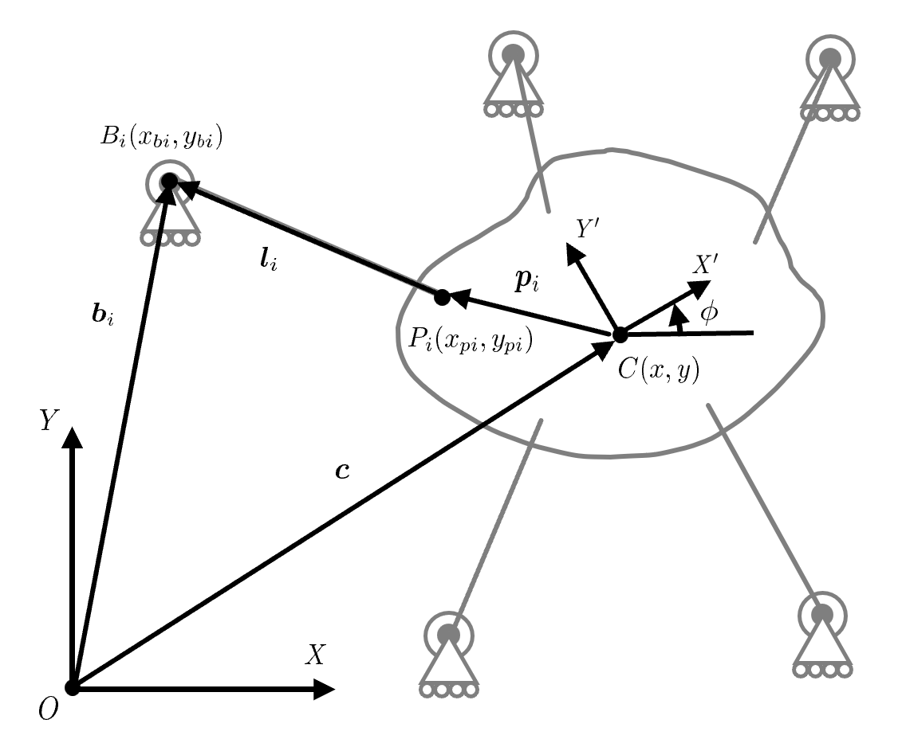
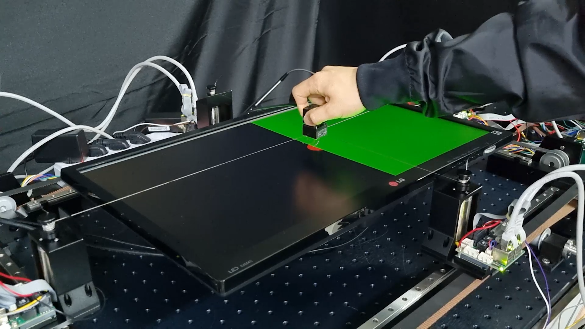
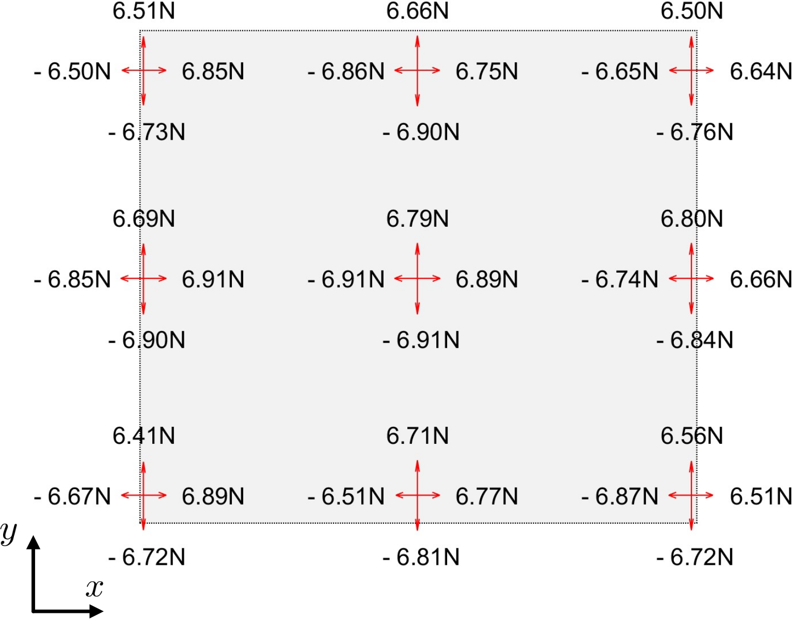
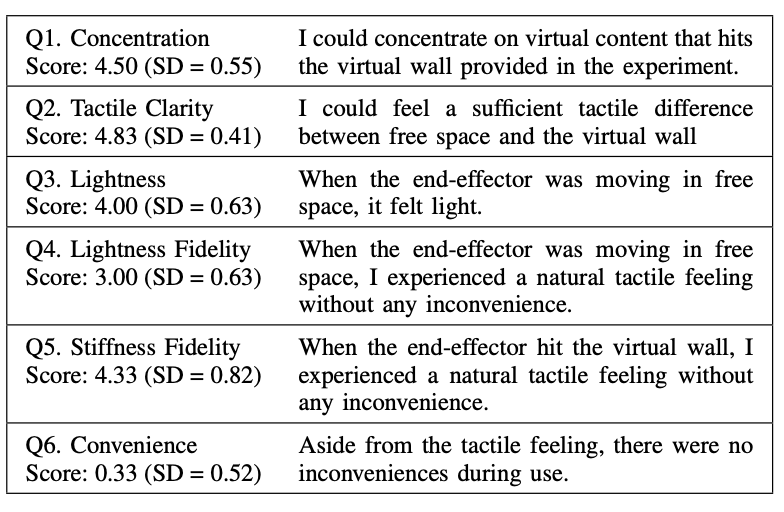
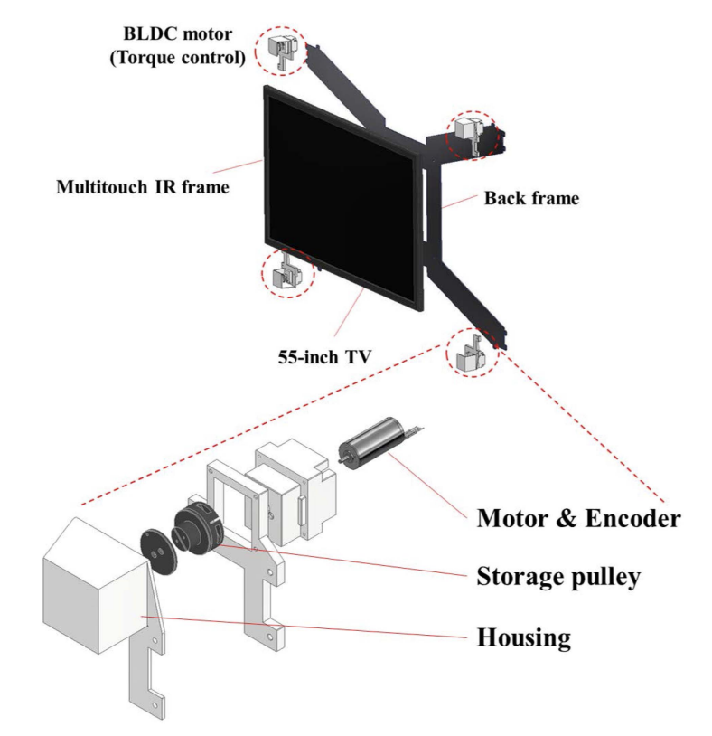
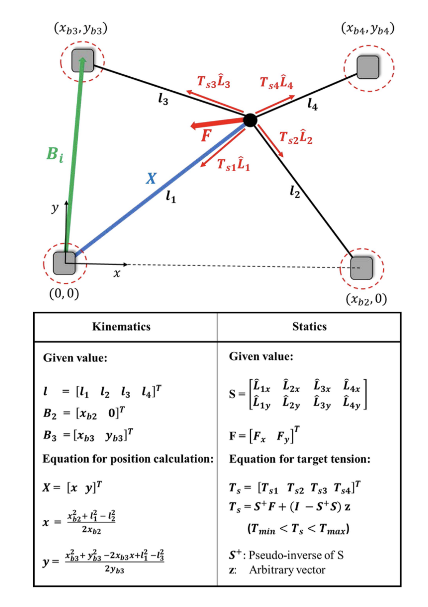
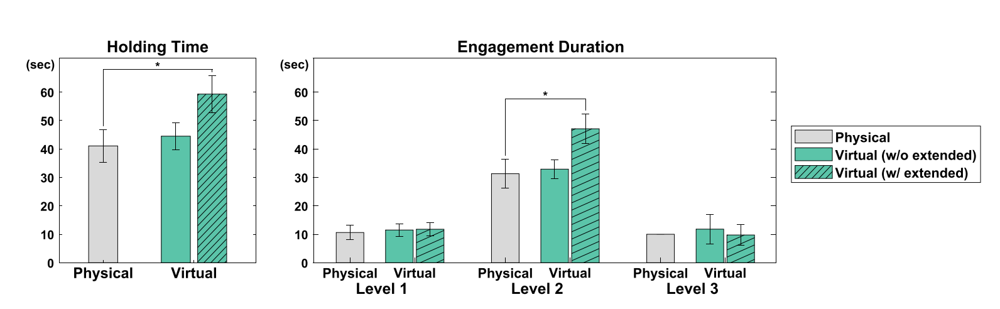
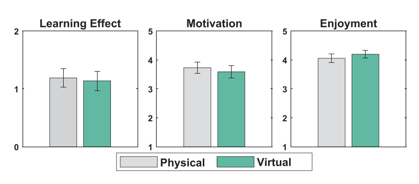

Cable-driven Haptic Interface
2020 - 2021
Maximum workspace and comparative study
1. Haptic interface design for maximum workspace and force exertion
My role: project lead, system design/control/analysis, user experiment
Collaborator: Donghyeon Lee, Junyong Bang, Hyung Gon Shin
Advisor: Wan Kyun Chung, Seungmoon Choi, Keehoon Kim
Jinhyuk Yoon, Donghyeon Lee, Junyong Bang, Hyung Gon Shin, Wan Kyun Chung, Seungmoon Choi, and Keehoon Kim.
Cable-Driven Haptic Interface with Movable Bases Achieving Maximum Workspace and Isotropic Force Exertion.
IEEE Transactions on Haptics, vol. 16, no. 3, pp. 365-378, 2023.
Haptic feedback can make learning more effective, but virtual educational content still offers little of it.
This work proposes a planar cable-driven haptic interface with movable bases.
It displays isotropic force feedback over a workspace extended to cover a commercial screen display.


We derive a generalized kinematic and static analysis of the cable-driven mechanism that accounts for movable pulleys.
Based on this analysis, we designed and controlled the system, including the movable bases, to maximize the workspace with isotropic force exertion over the target screen area.


We evaluated the system as a haptic interface by workspace, isotropic force-feedback range, bandwidth, Z-width, and a user experiment.
The workspace covered the target rectangular area, and the isotropic force reached up to 94.0% of the theoretical value within it.
2. Comparative user study
My role: system design & control
Collaborator: Dajin Lee, Daehyeon Nam, Dukchan Yoon
Advisor: Seungmoon Choi, Keehoon Kim
Dajin Lee, Daehyeon Nam, Jinhyuk Yoon, Dukchan Yoon, Seokwon Jeong, Keehoon Kim, and Seungmoon Choi.
A Comparative Study of Physical and Haptic Exhibits in an Informal Learning Environment
IEEE Transactions on Haptics, vol. 17, no. 4, pp. 557-566, 2024.
Virtual exhibits with haptic feedback make content easier to diversify and add digital affordance, at a lower cost than physical exhibits.
Few studies, however, have examined their value in informal learning environments.
We tested whether a haptic exhibit could replace or supplement a traditional physical exhibit in a science museum.


We built a two-degree-of-freedom cable-driven haptic device that simulates physical interaction on a large visual display.
Based on a seesaw-like exhibit in a local museum, we implemented a virtual lever simulation that embodies the same physics principles.


We then ran an observational study with children, comparing interaction behavior, learning effects, and self-reported motivation and enjoyment between the physical and virtual exhibits.
Visitors received the haptic exhibit well and engaged with it, showing its potential for diverse learning settings.